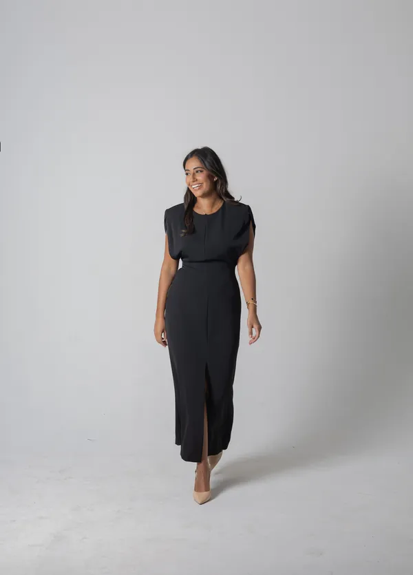
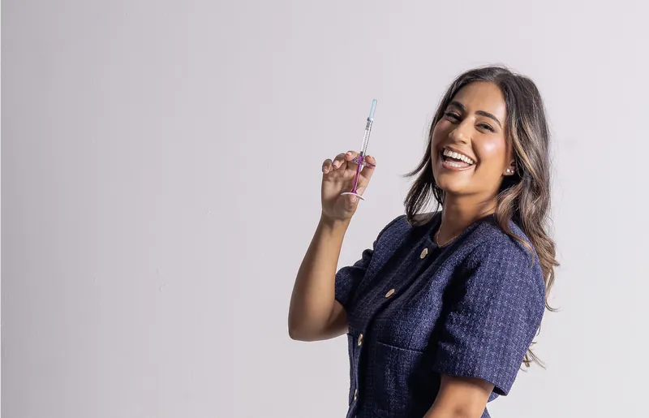

Victoria Yunaev, PA
Victoria is a physician assistant in Merrick, NY. She performs every treatment at Vixsthetics and reviews every page on this site.

Role
Physician assistant; performs every treatment at Vixsthetics
Before aesthetics
Three years in a cardiac intensive care unit
License
[CONFIRM: credential exactly as licensed, after the New York license check]
About Victoria
Victoria is driven by her passion for aesthetic medicine and for helping patients feel beautiful and confident in their own skin. She specializes in natural enhancement: never changing the way you look, only refining features that are already beautiful.
After three years in a cardiac intensive care unit, she moved her focus to medical aesthetics, bringing a critical care clinician’s attention to detail into a calm, personal setting.
What Victoria treats
- Neurotoxin, including the full face neurotoxin treatment and lip flip
- Facial balancing, dermal fillers, and lip filler
- Under eye treatment with filler, PRF, PRP, PRF EZGel, and PDGF
- Biostimulators: Sculptra and Radiesse
- Microneedling, IV therapy, weight loss management, and hair restoration
Training and education
[CONFIRM: physician assistant program, year, and injectables training]
Supervision
Victoria practices under the supervision of Dr. Peggy Bastien, the medical director. How medical oversight works.
Updated . Practice information is the practice’s own statement.

Begin with a consultation
Book online, call, or send a question. Every first visit starts with a conversation.